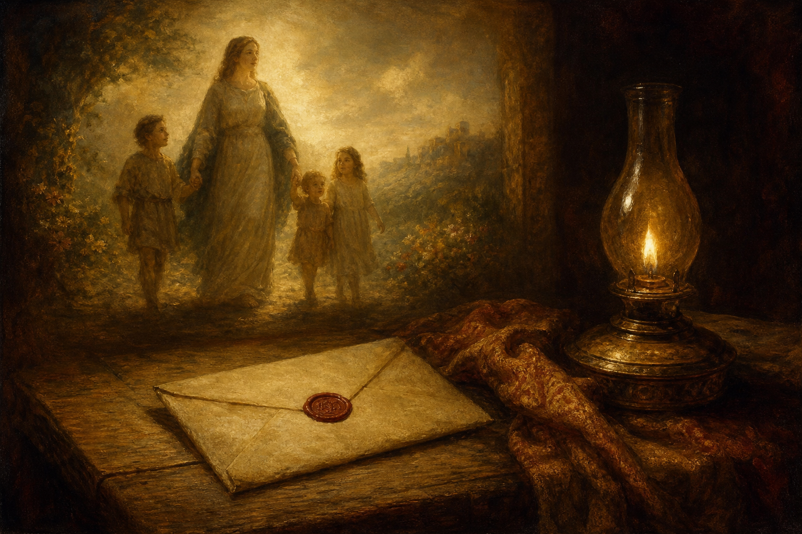

New Testament · Book 24 of 27
2 John
A brief note urges a beloved household to keep walking in truth and love, and to be wary of deceivers who deny Christ.
John's shortest surviving letter pairs a warm greeting with a firm warning, written to a woman and her children he calls simply "the elect lady."
This is love, that we walk after his commandments.
What happens in 2 John
John writes with evident affection to "the elect lady and her children," rejoicing that some of them are walking in truth. He reminds them of the command they have had from the beginning — to love one another — and warns that many deceivers have gone out into the world who deny that Jesus Christ came in the flesh. Rather than extending hospitality to such teachers, the household is told not to receive them or even greet them, since doing so would share in their harmful work. John closes hoping to visit in person rather than say everything by letter.
Why it matters
Short as it is, 2 John holds truth and love together without letting either crowd out the other: genuine love is not indifferent to what is taught, and genuine conviction does not excuse unkindness. It remains a compact lesson in discerning hospitality for any community facing false teaching.